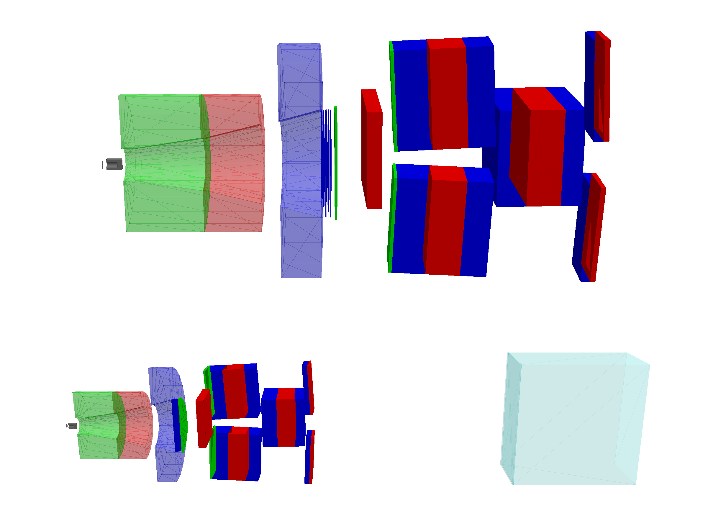
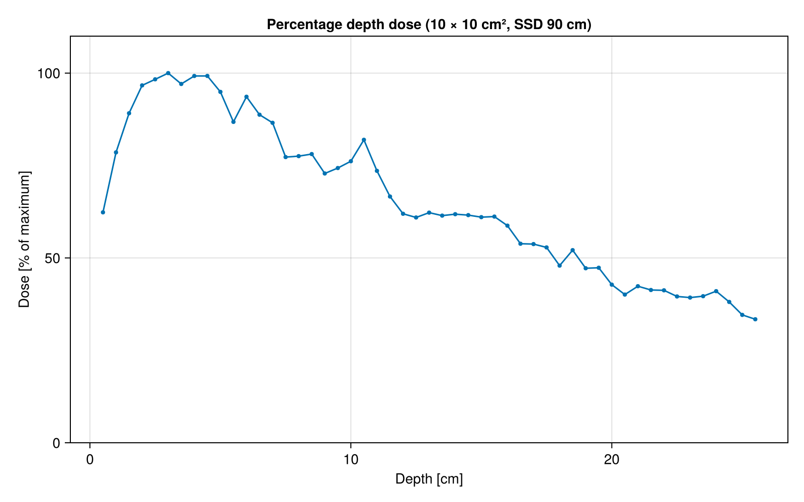
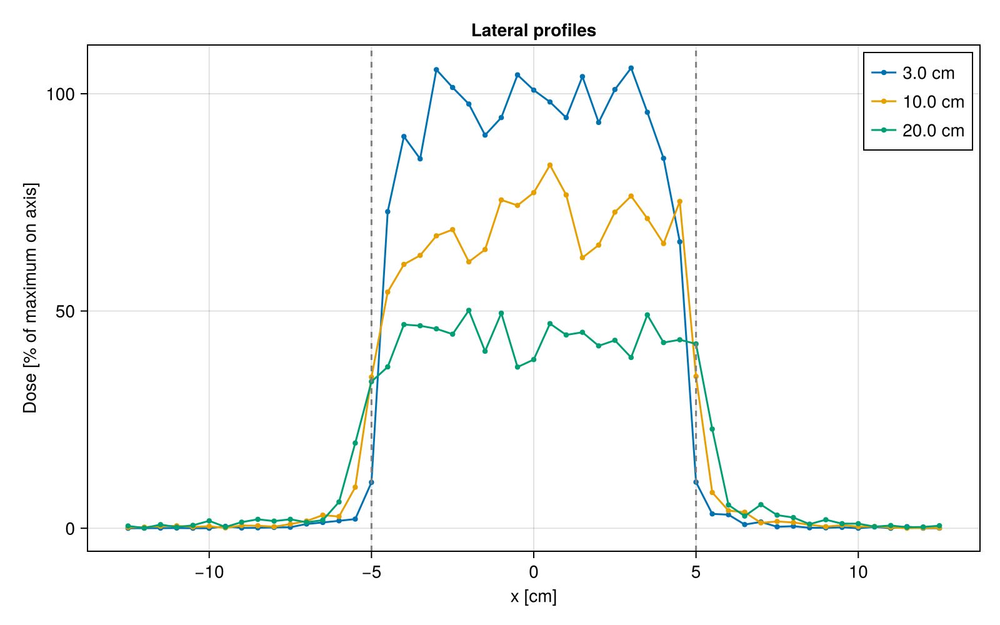
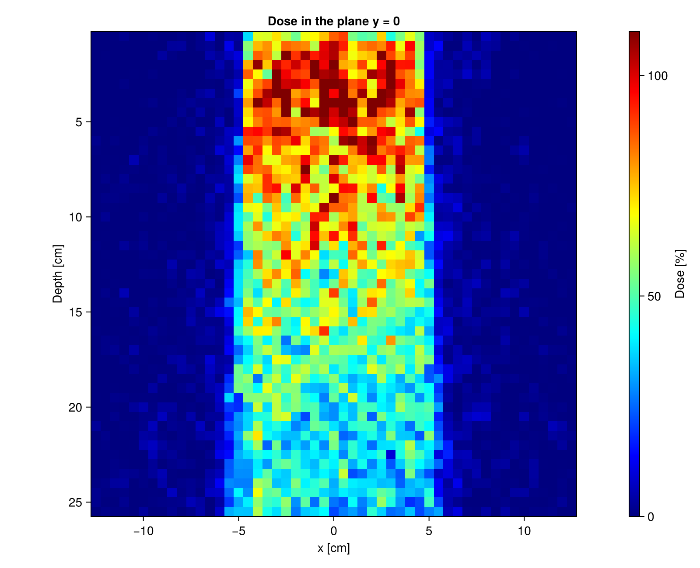

Medical Linac
This example was generated by Claude Code from the medical_linac C++ example of the Geant4 distribution.
This example is a port of the Geant4 advanced example medical_linac (S. Pozzi, B. Caccia and C. Mancini Terracciano). It simulates the head of a GE Saturn 43 medical linear accelerator, in the 12 MV photon mode with a 10 × 10 cm² field, and computes the dose in a water phantom. The accelerator was the subject of an intercomparison exercise of the EURADOS Working Group 6 (Computational Dosimetry), which published its geometry and measured dose distributions (EURADOS Report 2020-05).
The example shows:
- a detailed geometry built from polycones and boolean solids, with the jaws rotated around the source
- a
G4Regionwith its own production cuts for each element of the head - a custom primary generator with the energy and the spatial and angular spread of the electron beam
- simple variance reduction with the stepping and stacking actions, and the directional bremsstrahlung splitting of Geant4 configured with
G4EmParameters - the dose scored with a
G4JLScoringMesh(as the/score/commands of the C++ example), and the depth dose curve and the lateral profiles computed from it
You can also download this example as a Jupyter notebook and a plain Julia source file.
Table of contents
- Loading the necessary Julia modules
- Define the Detector
- Define the Physics List
- Define the Primary Generator
- Define the User Actions
- Define the Scoring Mesh
- Create the Application
- Configure, Initialize and Draw the Geometry
- Run the Simulation
- Results
Loading the necessary Julia modules
Loading Makie also activates the drawing of the geometry.
using Geant4
using Geant4.SystemOfUnits
using Printf
using CairoMakie
Define the Detector
The detector is defined in the MedicalLinacDetector.jl file, which we include here not to clutter the example. Along the beam:
- the target: a W block with a hole on the beam side, behind a thin Ti disk
- the primary collimator: three tubes (carbon steel, a W-Ni-Cu alloy and Pb) with a conical hole
- the flattening filter: a steel tube and three cones
- the ionization chamber: six thin Al layers, each followed by a kapton layer
- the Al vacuum window
- the jaws: four stacks of steel, Pb and W-Ni-Cu blocks, rotated around the source so that their inner faces define a square field
- a water phantom of 25.5 cm side, at a source to skin distance (SSD) of 90 cm
The head is inside a vacuum box whose origin is the source. Each element of the head is in its own G4Region with the production cuts of the C++ example: 1 mm in the target, the flattening filter and the window, 1 cm in the primary collimator, 0.1 mm in the ionization chamber, 2 cm in the jaws and 0.1 mm in the phantom.
include(joinpath(@__DIR__, "MedicalLinacDetector.jl"))
linac = MedicalLinacDetector(fieldSide = 10cm)Main.var"##142".MedicalLinacDetector
fieldSide: Float64 100.0
sourceToSkinDistance: Float64 900.0
phantomSide: Float64 255.0
checkOverlaps: Bool false
jawPVs: Array{CxxWrap.CxxWrapCore.CxxPtr{Geant4.G4VPhysicalVolume}}((0,))
filterPVs: Array{CxxWrap.CxxWrapCore.CxxPtr{Geant4.G4VPhysicalVolume}}((0,))
ffRadius: Float64 54.0
ffZ: Float64 149.5
Define the Physics List
The C++ example uses the option 3 of the standard EM physics with the decay physics. The option 3 is not available in Geant4.jl, so we use the option 4, which is also an option of the C++ example (/physics/addPhysics standard_opt4). We start from QBBC, replace its EM physics and remove the hadronic physics, which have a negligible effect on the dose of a 12 MV beam. The builder types are those of G4BuilderType.
struct MedicalLinacPhysics <: G4VUserPhysicsList
function MedicalLinacPhysics(verbose)
pl = QBBC(verbose)
ReplacePhysics(pl, move!(G4EmStandardPhysics_option4(verbose)))
for type in (3, 5, 6, 7, 8) ## EmExtra, HadronElastic, HadronInelastic, Stopping, Ions
RemovePhysics(pl, type)
end
return pl
end
endDefine the Primary Generator
The electrons start 5 mm before the source (the origin of the accelerator box), inside the hole of the target, and go along +z. As in the C++ example:
- the energy is Gaussian, with a mean of 12 MeV and a standard deviation of 0.127 MeV
- the start point is uniform in radius (not in area) inside a circle of 1 mm
- the direction has a Gaussian sin θ with a standard deviation of 0.003
Geant4.jl shares the data of the generator between the worker threads, so each thread creates its own particle gun and stores it in a dictionary indexed by the thread ID.
mutable struct LinacGunData <: G4JLGeneratorData
guns::Dict{Int, CxxPtr{G4ParticleGun}}
lock::ReentrantLock
z::Float64 ## start position along the beam
radius::Float64
meanEnergy::Float64
sigmaEnergy::Float64
sigmaAngle::Float64 ## standard deviation of sin θ
end
function LinacGenerator(; radius=1mm, meanEnergy=12MeV, sigmaEnergy=0.127MeV, sigmaAngle=0.003)
data = LinacGunData(Dict(), ReentrantLock(), 0., radius, meanEnergy, sigmaEnergy, sigmaAngle)
function init(data::LinacGunData, app)
data.z = -app.detector.sourceToSkinDistance - 5mm
gun = move!(G4ParticleGun())
SetParticleByName(gun, "e-")
lock(data.lock) do
data.guns[G4Threading!G4GetThreadId()] = gun
end
end
function generate(evt::G4Event, data::LinacGunData)::Nothing
gun = data.guns[G4Threading!G4GetThreadId()]
sθ = data.sigmaAngle * randn()
cθ, ϕ = sqrt(1 - sθ^2), 2π * rand()
ρ, α = data.radius * rand(), 2π * rand()
SetParticleEnergy(gun, data.meanEnergy + data.sigmaEnergy * randn())
SetParticlePosition(gun, G4ThreeVector(ρ * sin(α), ρ * cos(α), data.z))
SetParticleMomentumDirection(gun, G4ThreeVector(sθ * cos(ϕ), sθ * sin(ϕ), cθ))
GeneratePrimaryVertex(gun, CxxPtr(evt))
end
G4JLPrimaryGenerator("LinacGun", data; init_method=init, generate_method=generate)
endLinacGenerator (generic function with 1 method)Define the User Actions
There is no simulation data to collect: the dose is scored by the scoring mesh. The stepping and stacking actions only implement the variance reduction of the C++ example:
- the particles (and the new secondaries) that go backwards are killed
- the particles that enter a jaw envelope are killed, so the jaws are perfect absorbers
- the particles that leave the target, the upper and middle parts of the primary collimator or the flattening filter outside the cone defined by the top face of the flattening filter are killed
The volumes are compared by their pointers, which are stored in the detector structure by the construction function.
function stepaction(step::G4Step, app::G4JLApplication)::Nothing
track = GetTrack(step)
dir = GetMomentumDirection(track)
dz = z(dir)
det = app.detector
if dz < 0 || GetPhysicalVolume(GetPostStepPoint(step)) in det.jawPVs
SetTrackStatus(track, fStopAndKill)
elseif GetPhysicalVolume(GetPreStepPoint(step)) in det.filterPVs
tanmax = det.ffRadius / det.ffZ
(abs(x(dir) / dz) > tanmax || abs(y(dir) / dz) > tanmax) && SetTrackStatus(track, fStopAndKill)
end
return
end
stackaction(track::G4Track, ::G4JLApplication) = z(GetMomentumDirection(track)) < 0 ? fKill : fUrgentstackaction (generic function with 1 method)Define the Scoring Mesh
As in the run.mac macro of the C++ example, the dose is scored in a box mesh of 51 × 51 × 51 voxels of 5 mm, which covers the phantom.
mesh = G4JLScoringMesh("boxMesh_1",
BoxMesh(127.5mm, 127.5mm, 127.5mm),
translation = (0, 0, 130mm),
bins = (51, 51, 51),
quantities = [doseDeposit("dDep")])Geant4.G4JLScoringMesh{Geant4.BoxMesh}("boxMesh_1", Geant4.BoxMesh(127.5, 127.5, 127.5, :mm), (51, 51, 51), (0.0, 0.0, 130.0), nothing, Geant4.ScoringQuantity[Geant4.ScoringQuantity("dDep", :doseDeposit, :Gy, Geant4.AbstractFilter[])])Create the Application
app = G4JLApplication(; detector = linac, ## detector with parameters
generator = LinacGenerator(), ## primary particle generator
nthreads = 8, ## number of threads (MT)
physics_type = MedicalLinacPhysics, ## what physics list to instantiate
stepaction_method = stepaction, ## step action method
stackaction_method = stackaction, ## stacking action method
scorers = [mesh]) ## list of scorersGeant4.G4JLApplication{Main.var"##142".MedicalLinacDetector, Geant4.G4JLNoData}(Geant4.G4MTRunManagerAllocated(Ptr{Nothing}(0x0000000010af1190)), Main.var"##142".MedicalLinacDetector
fieldSide: Float64 100.0
sourceToSkinDistance: Float64 900.0
phantomSide: Float64 255.0
checkOverlaps: Bool false
jawPVs: Array{CxxWrap.CxxWrapCore.CxxPtr{Geant4.G4VPhysicalVolume}}((0,))
filterPVs: Array{CxxWrap.CxxWrapCore.CxxPtr{Geant4.G4VPhysicalVolume}}((0,))
ffRadius: Float64 54.0
ffZ: Float64 149.5
, [Geant4.G4JLNoData(), Geant4.G4JLNoData(), Geant4.G4JLNoData(), Geant4.G4JLNoData(), Geant4.G4JLNoData(), Geant4.G4JLNoData(), Geant4.G4JLNoData(), Geant4.G4JLNoData(), Geant4.G4JLNoData()], Geant4.G4JLPrimaryGenerator{Main.var"##142".LinacGunData}("LinacGun", Main.var"##142".LinacGunData(Dict{Int64, CxxWrap.CxxWrapCore.CxxPtr{Geant4.G4ParticleGun}}(), ReentrantLock(), 0.0, 1.0, 12.0, 0.127, 0.003), Main.var"##142".var"#init#11"(), Main.var"##142".var"#generate#14"(), Geant4.G4JLGeneratorAction[]), nothing, nothing, 8, 0, Geant4.G4MTRunManager, Geant4.G4JLDetectorConstruction, Main.var"##142".MedicalLinacPhysics, Geant4.G4JLRunAction, Geant4.G4JLEventAction, Geant4.G4JLTrackingAction, Geant4.G4JLSteppingAction, Main.var"##142".stepaction, nothing, nothing, nothing, nothing, nothing, nothing, Main.var"##142".stackaction, nothing, Dict{String, Geant4.G4JLProtoSD}(), Dict{String, Vector{Geant4.G4JLSensitiveDetector}}(), Geant4.G4JLScoringMesh[Geant4.G4JLScoringMesh{Geant4.BoxMesh}("boxMesh_1", Geant4.BoxMesh(127.5, 127.5, 127.5, :mm), (51, 51, 51), (0.0, 0.0, 130.0), nothing, Geant4.ScoringQuantity[Geant4.ScoringQuantity("dDep", :doseDeposit, :Gy, Geant4.AbstractFilter[])])], nothing, nothing)Configure, Initialize and Draw the Geometry
The default production cut (outside the regions) is 1 mm, as in the C++ example.
Very few electrons produce a photon that reaches the phantom: the photons are emitted in a wide cone and the field covers a small solid angle. The C++ example suggests 5 million electrons, which still gives noisy dose curves in 5 mm voxels. Here we add the directional bremsstrahlung splitting of Geant4, a variance reduction technique designed for linacs: each bremsstrahlung photon is split into 1000 photons with a weight of 1/1000, and only those that go towards a sphere of 15 cm radius around the centre of the phantom surface are kept. The others are kept with a probability of 1/1000 (Russian roulette) and a weight of 1. The dose scorer takes the weights into account, so the results are not biased. With the same CPU time, the statistical errors are about 4 times smaller than without splitting.
The splitting must be applied in all the regions of the head, and also to the photon interactions (Compton scattering, photoelectric effect, pair production and annihilation). Otherwise, a photon of weight 1 that survived the Russian roulette can scatter towards the phantom, and a single one deposits more energy in a voxel than all the other photons together.
configure(app)
ui`/run/setCut 1 mm`
em = G4EmParameters!Instance()
for region in ("TargetR", "primaryCollimatorR", "VacWindowR", "ffR", "IonChamberR", "JawsR",
"DefaultRegionForTheWorld"), process in ("eBrem", "compt", "phot", "conv", "annihil")
ActivateSecondaryBiasing(em, process, region, 1000., 100MeV)
end
SetDirectionalSplitting(em, true)
SetDirectionalSplittingTarget(em, G4ThreeVector(0, 0, 0))
SetDirectionalSplittingRadius(em, 15cm)
initialize(app)--- G4CoupledTransportation is used
Secondary biasing is activated for e+ and annihil inside G4Regions:
TargetR BiasingWeight= 0.001
Directional splitting activated, with target position: (0,0,0) cm; radius: 15cm.
Secondary biasing is activated for gamma and phot inside G4Regions:
TargetR BiasingWeight= 0.001
Directional splitting activated, with target position: (0,0,0) cm; radius: 15cm.
Secondary biasing is activated for gamma and compt inside G4Regions:
TargetR BiasingWeight= 0.001
Directional splitting activated, with target position: (0,0,0) cm; radius: 15cm.
Secondary biasing is activated for gamma and conv inside G4Regions:
TargetR BiasingWeight= 0.001
Directional splitting activated, with target position: (0,0,0) cm; radius: 15cm.
.... G4ScoringMessenger::MeshBinCommand - G4ScoringBox
G4ScoringManager has 1 scoring meshes.
G4ScoringBox : boxMesh_1 --- Shape: Box mesh
Size (x, y, z): (12.75, 12.75, 12.75) [cm]
# of segments: (51, 51, 51)
displacement: (0, 0, 13) [cm]
registered primitve scorers :
0 dDep
The head of the accelerator and the whole setup with the phantom, cut in half at y = 0 and seen from the side, with the beam (z axis) going from left to right. The jaws are open for the 10 × 10 cm² field. The camera looks at the cut face from +y, with the x axis up, from a distance proportional to the length of the drawn region (the distance factor is for a field of view of 45°).
function sideview!(s, zmin, zmax; distance=0.5, tilt=0.3, fov=15)
zc, d = (zmin + zmax)/2, distance * (zmax - zmin) * tand(22.5) / tand(fov/2)
cam = cameracontrols(s.scene)
cam.fov[] = fov ## narrow field of view: little perspective distortion
update_cam!(s.scene, cam, Vec3f(tilt * d, d, zc), Vec3f(0, 0, zc), Vec3f(1, 0, 0))
cam.settings.center[] = false ## keep this view when the figure is displayed
end
fig = Figure(size=(1200, 900))
s1 = LScene(fig[1,1], show_axis=false)
Geant4.draw!(s1, GetVolume("accWorld")[], clip=:y)
sideview!(s1, -20mm, 490mm, distance=0.7)
s2 = LScene(fig[2,1], show_axis=false)
Geant4.draw!(s2, GetWorldVolume(), clip=:y)
sideview!(s2, -920mm, 260mm, distance=0.38)
rowsize!(fig.layout, 1, Relative(0.62))
Run the Simulation
100000 electrons take about one minute with 8 threads. Increase nevents for smoother curves.
nevents = 100_000
ui`/run/printProgress 20000`
@time beamOn(app, nevents)### Run 0 starts.
G4WT1 > .... G4ScoringMessenger::MeshBinCommand - G4ScoringBox
G4WT3 > .... G4ScoringMessenger::MeshBinCommand - G4ScoringBox
G4WT6 > .... G4ScoringMessenger::MeshBinCommand - G4ScoringBox
G4WT1 > G4ScoringManager has 1 scoring meshes.
G4WT1 > G4ScoringBox : boxMesh_1 --- Shape: Box mesh
G4WT1 > Size (x, y, z): (12.75, 12.75, 12.75) [cm]
G4WT1 > # of segments: (51, 51, 51)
G4WT3 > G4ScoringManager has 1 scoring meshes.
G4WT1 > displacement: (0, 0, 13) [cm]
G4WT3 > G4ScoringBox : boxMesh_1 --- Shape: Box mesh
G4WT1 > registered primitve scorers :
G4WT2 > .... G4ScoringMessenger::MeshBinCommand - G4ScoringBox
G4WT5 > .... G4ScoringMessenger::MeshBinCommand - G4ScoringBox
G4WT1 > 0 dDep
G4WT2 > G4ScoringManager has 1 scoring meshes.
G4WT5 > G4ScoringManager has 1 scoring meshes.
G4WT5 > G4ScoringBox : boxMesh_1 --- Shape: Box mesh
G4WT2 > G4ScoringBox : boxMesh_1 --- Shape: Box mesh
G4WT2 > Size (x, y, z): (12.75, 12.75, 12.75) [cm]
G4WT2 > # of segments: (51, 51, 51)
G4WT7 > .... G4ScoringMessenger::MeshBinCommand - G4ScoringBox
G4WT2 > displacement: (0, 0, 13) [cm]
G4WT2 > registered primitve scorers :
G4WT2 > 0 dDep
G4WT4 > .... G4ScoringMessenger::MeshBinCommand - G4ScoringBox
G4WT7 > G4ScoringManager has 1 scoring meshes.
G4WT7 > G4ScoringBox : boxMesh_1 --- Shape: Box mesh
G4WT7 > Size (x, y, z): (12.75, 12.75, 12.75) [cm]
G4WT7 > # of segments: (51, 51, 51)
G4WT7 > displacement: (0, 0, 13) [cm]
G4WT7 > registered primitve scorers :
G4WT7 > 0 dDep
G4WT4 > G4ScoringManager has 1 scoring meshes.
G4WT4 > G4ScoringBox : boxMesh_1 --- Shape: Box mesh
G4WT4 > Size (x, y, z): (12.75, 12.75, 12.75) [cm]
G4WT4 > # of segments: (51, 51, 51)
G4WT4 > displacement: (0, 0, 13) [cm]
G4WT4 > registered primitve scorers :
G4WT4 > 0 dDep
G4WT0 > .... G4ScoringMessenger::MeshBinCommand - G4ScoringBox
G4WT3 > Size (x, y, z): (12.75, 12.75, 12.75) [cm]
G4WT3 > # of segments: (51, 51, 51)
G4WT3 > displacement: (0, 0, 13) [cm]
G4WT3 > registered primitve scorers :
G4WT3 > 0 dDep
G4WT0 > G4ScoringManager has 1 scoring meshes.
G4WT0 > G4ScoringBox : boxMesh_1 --- Shape: Box mesh
G4WT0 > Size (x, y, z): (12.75, 12.75, 12.75) [cm]
G4WT0 > # of segments: (51, 51, 51)
G4WT0 > displacement: (0, 0, 13) [cm]
G4WT0 > registered primitve scorers :
G4WT0 > 0 dDep
G4WT6 > G4ScoringManager has 1 scoring meshes.
G4WT6 > G4ScoringBox : boxMesh_1 --- Shape: Box mesh
G4WT5 > Size (x, y, z): (12.75, 12.75, 12.75) [cm]
G4WT6 > Size (x, y, z): (12.75, 12.75, 12.75) [cm]
G4WT5 > # of segments: (51, 51, 51)
G4WT5 > displacement: (0, 0, 13) [cm]
G4WT6 > # of segments: (51, 51, 51)
G4WT6 > displacement: (0, 0, 13) [cm]
G4WT5 > registered primitve scorers :
G4WT5 > 0 dDep
G4WT6 > registered primitve scorers :
G4WT6 > 0 dDep
G4WT6 > ### Run 0 starts on worker thread 6.
G4WT1 > ### Run 0 starts on worker thread 1.
G4WT3 > ### Run 0 starts on worker thread 3.
G4WT0 > ### Run 0 starts on worker thread 0.
G4WT6 > --> Event 0 starts with initial seeds (13049039,61775110).
G4WT5 > ### Run 0 starts on worker thread 5.
G4WT2 > ### Run 0 starts on worker thread 2.
G4WT4 > ### Run 0 starts on worker thread 4.
G4WT7 > ### Run 0 starts on worker thread 7.
G4WT3 > --> Event 20000 starts with initial seeds (89862531,9432512).
G4WT2 > --> Event 40000 starts with initial seeds (62524855,6702582).
G4WT5 > --> Event 60000 starts with initial seeds (55745160,63940167).
G4WT7 > --> Event 80000 starts with initial seeds (7307034,97028274).
106.672690 seconds (270.27 M allocations: 4.037 GiB, 0.74% gc time, 0.72% compilation time: <1% of which was recompilation)
Results
The dose in each voxel (in Gy), with the coordinates of the centres of the voxels. The depth is measured from the phantom surface (z = 0).
dose, _, _ = mesh.dDep
nb = mesh.bins[1]
centers = range(-127.5mm + 2.5mm, 127.5mm - 2.5mm, length=nb)
depths = centers .+ 130mm
c = (nb + 1) ÷ 2 ## central voxel
avg(a; dims) = vec(sum(a; dims) / prod(size(a, d) for d in dims))avg (generic function with 1 method)Percentage depth dose
The dose on the beam axis, averaged over the 5 × 5 central voxels (2.5 × 2.5 cm²), as a percentage of its maximum. The maximum of the dose is reached at a depth of a few cm because the secondary electrons need this distance to reach equilibrium (build-up region).
axis = avg(dose[c-2:c+2, c-2:c+2, :], dims=(1, 2))
imax = argmax(axis)
pdd = 100 * axis / axis[imax]
d10 = pdd[argmin(abs.(depths .- 100mm))]
@printf "Depth of the maximum dose: %.1f cm\n" depths[imax]/cm
@printf "PDD at 10 cm depth : %.1f %%\n" d10
@printf "Dose at the maximum : %.3g Gy per electron\n" axis[imax] / nevents
fig = Figure(size=(800, 500))
ax = Axis(fig[1,1], xlabel="Depth [cm]", ylabel="Dose [% of maximum]", title="Percentage depth dose (10 × 10 cm², SSD 90 cm)")
scatterlines!(ax, depths/cm, pdd, markersize=6)
ylims!(ax, 0, 110)
Lateral profiles
The dose along x, averaged over 5 voxels in y and 3 in depth, at the depth of the maximum and at 10 and 20 cm, as a percentage of the dose on the axis at the depth of the maximum. The field is defined at SSD + 10 cm = 100 cm, so its edges are at ±5 cm at 10 cm depth and spread with the depth.
fig = Figure(size=(800, 500))
ax = Axis(fig[1,1], xlabel="x [cm]", ylabel="Dose [% of maximum on axis]", title="Lateral profiles")
norm = axis[imax]
for d in (depths[imax], 100mm, 200mm)
k = argmin(abs.(depths .- d))
profile = avg(dose[:, c-2:c+2, k-1:k+1], dims=(2, 3))
scatterlines!(ax, centers/cm, 100 * profile / norm, markersize=6, label=@sprintf("%.1f cm", depths[k]/cm))
end
vlines!(ax, [-5, 5], color=:gray, linestyle=:dash)
axislegend(ax, position=:rt)
Dose map
The dose in the central plane (y = 0) of the phantom, as a percentage of the maximum on the axis.
fig = Figure(size=(800, 650))
ax = Axis(fig[1,1], xlabel="x [cm]", ylabel="Depth [cm]", title="Dose in the plane y = 0", yreversed=true, aspect=DataAspect())
hm = heatmap!(ax, centers/cm, depths/cm, 100 * dose[:, c, :] / norm, colormap=:jet, colorrange=(0, 110))
Colorbar(fig[1,2], hm, label="Dose [%]")
This page was generated using Literate.jl.